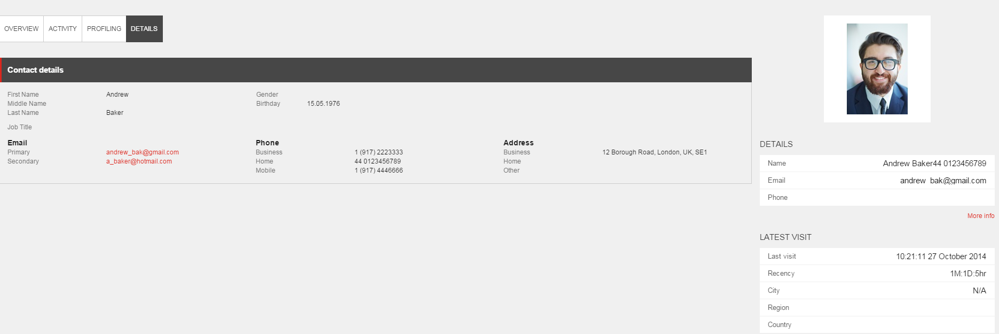
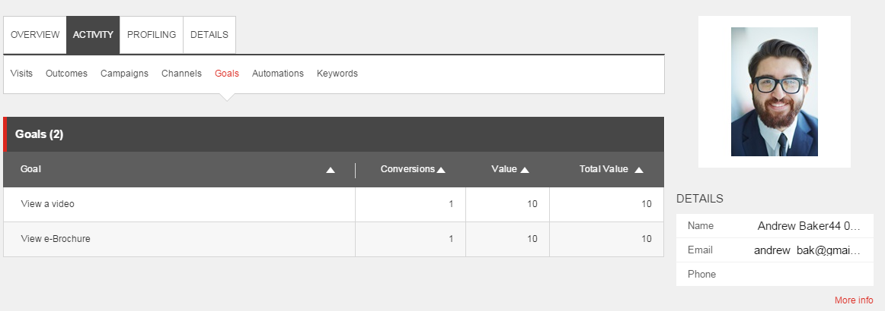
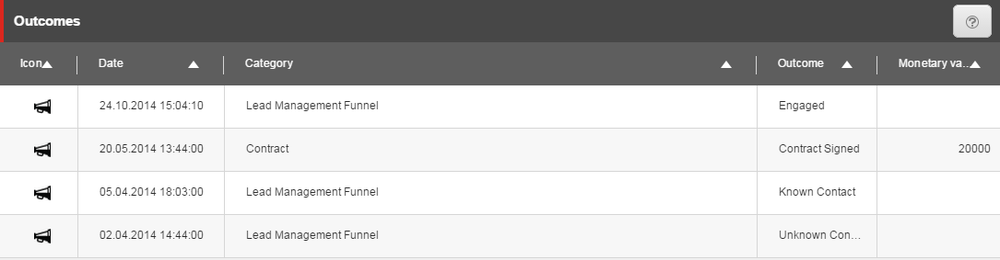
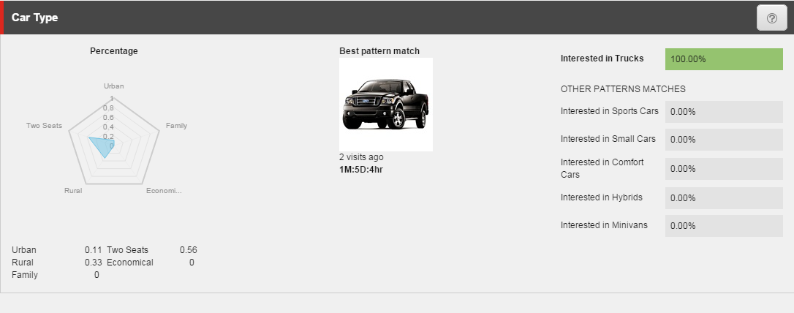
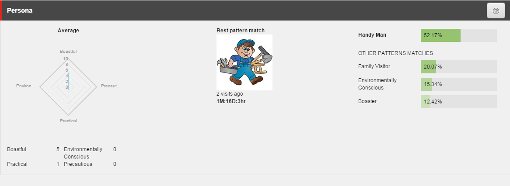
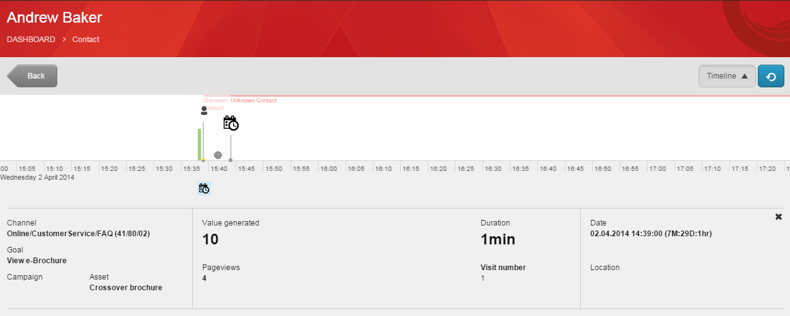
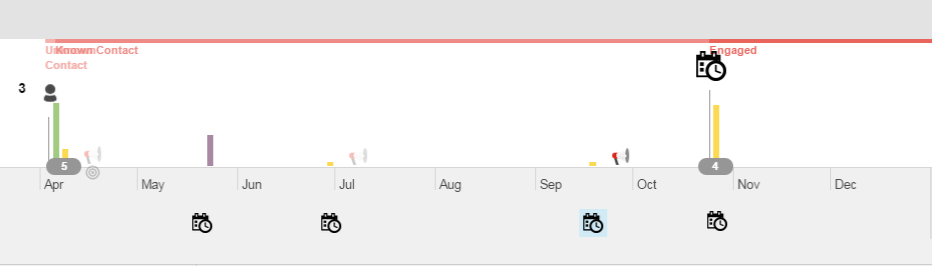
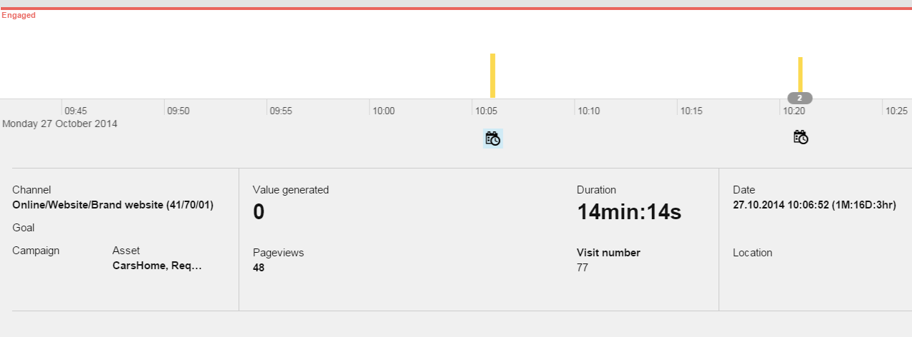

エクスペンスプロフィール 営業担当者のシナリオ¶
エクスペリエンスプロファイル ダッシュボードでは、コンタクトが示すエンゲージメントとコミットメントのレベルの概要が表示され、営業担当者はコンタクトの特性、閲覧行動、購買嗜好を理解するのに役立ちます。
この例のシナリオでは、あるコンタクトを知りたいとし、そのコンタクトがカーディーラーのウェブサイトにどの程度関与しているかを調べたいとします。すべてのインタラクションとアクティビティのセッショントレイルを見るには、トリガーされたゴールやイベント、登録されたキャンペーン、トリガーされたエンゲージメントプラン、使用されたキーワードなどを見ることができます。
エクスペリエンスプロファイル（エクスペリエンス・プロファイル）ダッシュボードを開き、名前のついた連絡先を見つけます。¶
連絡先を見つけるには、[エクスペリエンスプロファイル] にある検索ボックスに名前または電子メールアドレスを入力します。
エクスペリエンスプロファイルを開き、名前付きの連絡先を見つけるには、以下の手順に従います。
Webブラウザで、Sitecore WebサイトのURLを入力します。
ログイン資格情報を入力し、「ログイン」をクリックします。
連絡先を検索するには、[エクスペリエンスプロファイル]をクリックします。デフォルトでは、ウェブサイトへの最新の訪問者のリストが表示されます。
{kind=link}
リストから直接連絡先を選択するか、検索ボックスを使用して名前やメールアドレスで連絡先を検索することができます。
例えば、「連絡先の検索」ボックスにAndrew Bakerという名前、メールアドレス、または名前の一部を入力すると、その連絡先があなたのウェブサイトで経験したことについての詳細が表示されます。または、連絡先リストに表示されている連絡先の名前をクリックします。
検索結果から該当する連絡先を探し、「連絡先カード」をクリックすると、この連絡先のxFileが表示されます。
{kind=link}
この例では、Andrew Bakerのエクスペリエンスプロファイルが表示されます。デフォルトでは、[概要] タブが最初に表示されます。
{kind=link}
エクスペリエンスプロファイルを使ってコンタクトを知る¶
エクスペリエンス・プロフィール・ダッシュボードでは、ウェブサイトを訪問した各コンタクトの主要なインタラクション・データを簡単に要約することができます。このデータには、訪問回数、閲覧ページ、登録キャンペーン、生成されたエンゲージメントバリューポイント、エンゲージメントプラン、ソーシャルメディア情報などが含まれます。
エクスペリエンスプロファイルは、コンタクトがウェブサイトに示した興味のレベルを測定するのに役立ちます。有望なセールスリードをターゲットにして、電話やミーティングで興味を持ったコンタクトをフォローアップすることができます。コンタクトが購入の意思を持たずにウェブサイトのページを閲覧しているだけなのか、キャンペーン登録フォームに記入したり、価格表やパンフレットをダウンロードしたりするなど、より積極的な意思表示をしているのかを知ることが重要です。エクスペリエンス・プロフィールは、このような貴重な情報を提供します。また、そのコンタクトが最高級の製品に興味を持つプレミアム顧客であるかどうかも、エクスペリエンス・プロフィールから判断することができるかもしれません。
以下のエクスペリエンス・プロフィール・ダッシュボードのタブとサブタブの選択は、特定のコンタクトのエンゲージメント・レベルを分析する方法を示しています。
概要タブ¶
[概要] タブでは、ウェブサイトへのコンタクトや訪問者の活動や経験の概要を簡単に知ることができます。
最新のイベント - コンタクトが最近あなたのウェブサイト上でトリガーしたイベントの選択を表示します。
例えば、アンドリュー・ベイカーというコンタクトの場合、彼の最後の訪問記録、プロモーションビデオのダウンロード、検索キーワード「アストン」と「自動車ディーラー」を使用したことが表示されます。
ベストパターンマッチ - 訪問中に収集されたプロフィール値とパターンマッチに基づいて、コンタクトの好みと興味のスナップショットを瞬時に表示します。各パターンカードには、事前に定義されたプロファイル値のセットが含まれているので、コンタクトがウェブサイトを閲覧すると、閲覧したコンテンツに応じて異なるパターンカードと一致させることができます。
この例では、コンタクトがどのタイプの車に興味を持っているのか、購入までの距離はどの程度なのかを見ることができます。詳細情報を見るリンクをクリックすると、プロファイリングタブに直接アクセスして、より詳細な情報を見ることができます。
最近のキャンペーン - コンタクトが申し込んだ最新のキャンペーンが表示されます。キャンペーンタブに直接アクセスして、コンタクトのブランドに対するコミットメントとエンゲージメントのレベルを一目で確認するには、ここをクリックして詳細情報を参照してください。
[概要] タブの右側には、連絡先の名前とメールアドレスが表示されます。詳細] タブで、連絡先の自宅住所などの連絡先の詳細情報を表示するには、[詳細情報] をクリックします。
{kind=link}
ゴールサブタブ¶
[アクティビティ] タブの [ゴール] サブタブでは、コンバージョンされたゴールのリストを、コンバージョンの合計、再帰性、すべての訪問で収集されたエンゲージメントバリューなどの他のメトリクスとともに表示することができます。この情報を使用して、どのゴールがコンバージョンされたかに基づいて、コンタクトの意図について多くのことを知ることができます（特に少数の訪問で累積エンゲージメントバリューが高い場合）。
{kind=link}
この例では、アンドリュー・ベイカーがコンバージョンしたゴールの中に、電子パンフレットの閲覧とビデオの閲覧が含まれていることがわかります。彼は、カーディーラーのウェブサイトへの訪問中に、エンゲージメントバリューポイント（合計値）を20ポイント蓄積しました。
アンドリュー・ベイカーは、少数の訪問でいくつかのリソースをダウンロードしており、これは彼が車の購入に興味を持っていることを示しています。これらの目標をトリガーにした結果、彼はエンゲージメント・プランの別の状態に置かれるかもしれませんし、代わりに、営業担当者が彼の決断を助けるために電話や電子メールを提供するかもしれません。
アウトカムサブタブ¶
[アクティビティ] タブの [成果] サブタブには、重要な金銭的または非金銭的な成果をもたらしたインタラクションのリストが表示されます。
これらは、パーソナライゼーションを作成したり、コンタクトをエンゲージメントプランに追加したり変更したりするなど、さらなるアクションを取るべきかどうかを示します。
リード管理ファネルはデフォルトの成果ファネルで、いくつかのステージがあります。
この例では、アンドリュー・ベイカー氏が、4月の不明なコンタクトから、5月の契約締結、10月のエンゲージドへと、いくつかの異なる成果定義レベルを達成していることがわかります。
{kind=link}
プロファイリングタブ¶
[プロファイリング] タブでは、連絡先がウェブサイトのコンテンツに現在興味を持っていることを反映した一連のプロファイルを見ることができます。これは動的なプロフィール情報で、訪問者が閲覧するページごと、または訪問者がウェブサイト上で取る行動ごとに変化し、適応されます。
この例では、アンドリュー・ベイカーはトラックに興味を持っていることが確認されています。
{kind=link}
ハンディマンのペルソナと一致していることも確認されています。
{kind=link}
[概要] タブでは、彼がアストンという検索語を使用していることがわかりますが、これは彼が高級車に興味があり、購入サイクルの検索段階にあることを示唆しています。
プロフィール情報は、コンタクトが訪問するたびに変化し、適応するため、パターンマッチは動的であり、常に変化します。これは、コンタクトがその時点で閲覧したコンテンツを反映しています。
指定されたコンタクトの現在の活動レベルを分析する¶
エクスペリエンスプロファイルでは、タイムラインでコンタクトのブランドでの活動を時系列で見ることができます。最初の交流のポイントを匿名のコンタクトとして見ることができ、訪問者が名前やメールアドレスを提供して、名前付きのコンタクトになった時の様子を見ることができます。一目でわかるように、タイムラインでは、コンタクトがあなたのブランドで行ったすべての活動の概要を視覚的に見ることができます。タイムラインを使用して、ウェブサイト上でのコンタクトの活動が減少しているかどうかを評価したり、コンタクトにブランドを思い出させるために連絡を取る時期が来ているかどうかを評価することができます。
例えば、Andrew Bakerのタイムラインでは、彼がコンタクトになった時期と最近の活動を見ることができます。未知のコンタクトとしての彼の最初の活動は、キャンペーンの一部である電子パンフレットを閲覧したことで、10のエンゲージメントバリューポイントが発生しました。
{kind=link}
この例では、アンドリュー・ベイカーが数ヶ月間に渡って一連のやり取りを経て、自動車ディーラーと関わりを持ち、未知の接触者から特定の接触者、そして関わりを持つようになったことがタイムラインで示されています。
{kind=link}
最後の2つのやりとりでは、彼が融資を依頼していることを示しており、あなたからの商品購入が近づいていることを示しています。
{kind=link}
しかし、10月27日以降は全く活動を見せていない。
まとめ¶
このシナリオでは、アンドリュー・ベイカーはカーディーラーのウェブサイトを数回訪問し、コンテンツをダウンロードし、複数のゴールをコンバージョンし、いくつかのキャンペーンにサインアップしました。彼の訪問のたびに、コミットメントのレベルが高まっていることがわかります。彼のプロフィール情報によると、彼はトラックに興味があり、Handy manのペルソナと一致しており、プレミアム顧客である可能性が高いことがわかります。ウェブサイト上での彼の活動は数ヶ月間高水準を維持していましたが、最近は減少しています。
エクスペリエンスプロファイルは、営業やマーケティングの幹部が次にどのような行動をとるべきかを決めるのに役立ちます。この例では、連絡先のアンドリュー・ベイカーは、セールスコンサルタントからの個人的な電話で、どの車のモデルが自分に一番合うかを詳しく話し合っても反応が良いかもしれません。また、営業やマーケティング担当者は、より適切な新しいエンゲージメントプランの修正や作成を開発者に依頼することで、エクスペリエンスマーケティング戦略を改善することを決定するかもしれません。